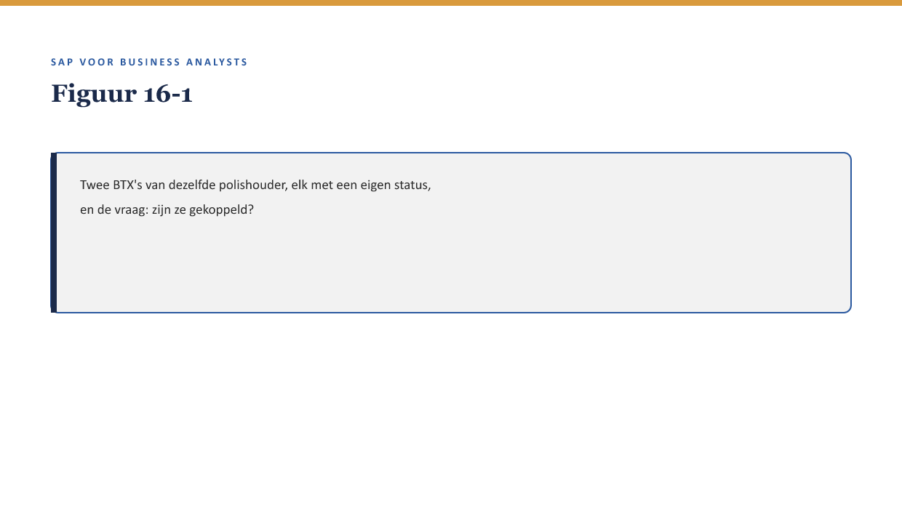

Deel 16 — Documenten & documentflow
Slidedeck · Niveau 2 Professional · Cursus SAP voor Business Analysts · Ductus
Slidetypen: titleSlide, sectionSlide, bulletsSlide, statementSlide, quoteSlide, tableSlide, figureSlide, opdrachtSlide.
Slide 1 — titleSlide
Documenten & documentflow Deel 16 · Niveau 2 Professional · Cursus SAP voor Business Analysts
Slide 2 — statementSlide
“Wat is er gebeurd met mijn adreswijziging van drie maanden geleden?”
Slide 3 — figureSlide

Slide 4 — bulletsSlide
Wat we vandaag doen
- Wat documentflow is
- Statusmodellen: toegestane overgangen
- Toegepast op FS-PM en FS-CM
- Een documentflow-vraag die een probleem blootlegt
Slide 5 — figureSlide

Slide 6 — quoteSlide
Documentflow is voor documenten wat een sleutel is voor tabelrijen. — Kernzin, reader §3
Slide 7 — sectionSlide
Statusmodellen
Slide 8 — figureSlide

Slide 9 — opdrachtSlide
Opdracht 16.2 — Toegestane overgang?
Van “ingediend” direct naar “uitgekeerd” — mag dat?
Slide 10 — opdrachtSlide
Opdracht 16.3 — De polishouder beantwoorden
Hoe stelt documentflow de medewerker in staat de vraag te beantwoorden?
Slide 11 — sectionSlide
Ontbrekende koppeling of navigatie?
Slide 12 — opdrachtSlide
Opdracht 16.4
“Ik kan het niet terugvinden” — welke vraag onderscheidt het probleem?
Slide 13 — bulletsSlide
Samenvatting in vijf zinnen
- Documentflow koppelt expliciet samenhangende documenten aan elkaar
- Een statusmodel legt toegestane overgangen vast — een bedrijfsregel, geen technische beperking
- Bij FS-PM koppelt het een volledige polisgeschiedenis; bij FS-CM een claim aan polis, correspondentie en boeking
- Documentflow beantwoordt “wat is hiermee gebeurd” zonder los tabellen te doorzoeken
- Onderscheid altijd: ontbreekt de koppeling, of ontbreekt de kennis om haar te vinden?
Slide 14 — titleSlide
Volgende deel Organisatiestructuur & determinatie Deel 17